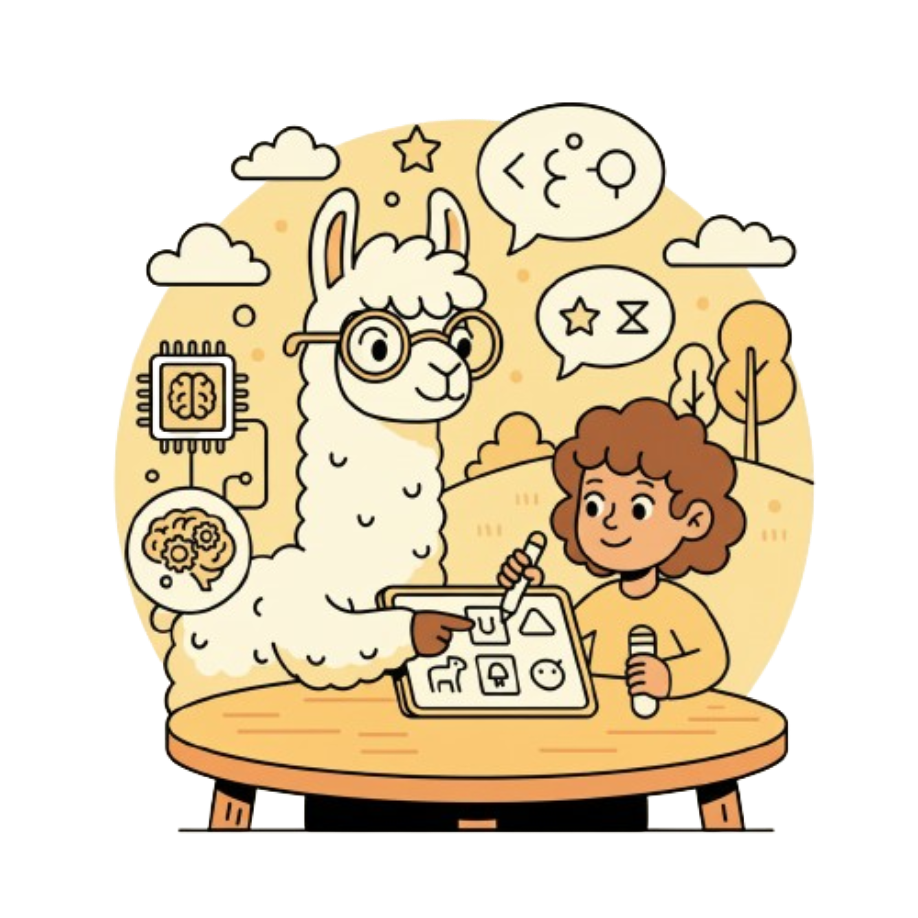

The BabyVLM Workshop
Toward Developmentally
Plausible Multimodal Systems
NeurIPS 2026
How can we get multimodal models to learn as efficiently as human infants?
Workshop Summary
Great effort has been invested into optimizing language model (LM) pretraining at massive scales in terms of pretraining dataset size; leading models today are trained on datasets of well over a trillion words. This is significantly more than the 100 million words that humans hear during typical development. How can we close the gap between human and machine language learners? Recent work suggests that engagement with other modalities may be the key to unlocking sample-efficient language learning.
Integrating more modalities raises critical new research questions and challenges relative to the text-only settings observed so far:
- How can we effectively integrate other modalities into LM training? Can this improve sample-efficiency relative to text-only training?
- By what standards should multimodal language learners be evaluated? What new benchmarks are needed to accurately assess learning of language and its grounding?
- Can we foster new kinds of research questions in computational cognitive science—for example, learnability in the presence or absence of visual signals?
The BabyVLM Workshop is designed to be the central forum for addressing these questions. In partnership with members of the BabyLM Challenge team, we invite researchers to contribute to the development of a community centered on questions of learnability, sample-efficient multimodal pretraining, cognition, and human-inspired evaluation of multimodal systems. The workshop will concentrate on key questions where the interaction of language and other modalities is key for learning, or for evaluating the capabilities of sample-efficient language learners.
Overall, we intend to establish a community of researchers interested in the intersection of multimodal machine learning, cognitive science, and developmental psychology. We therefore invite work and perspectives focused on the underexplored intersection of these key themes. We are proud to host invited keynotes and panel discussions featuring leading scholars from each theme area, such that we can create dialogues centered on questions enabled by the rich interaction of these disciplines.
Advertisement: How can we get multimodal models to learn as efficiently as human infants? Learn with us at the BabyVLM workshop!
Workshop Themes
- Developmentally plausible multimodal language models. This theme explores the challenge of pretraining multimodal LMs using only as much data as a human has access to when first learning language. We will accept original work and kick off a competition, the BabyVLM Challenge, designed to encourage developments in sample-efficient vision language modeling.
- Developmentally aligned evaluation. Most multimodal evaluation datasets focus on artificial tasks, or are highly difficult relative to the learning signals available to a human learner. To address this gap, we will encourage the submission of evaluations and benchmarks inspired by human language and vision capabilities. We aim to solicit evaluations that not only measure psychometric fit to human metrics, but also enable a more fine-grained view of multimodal language learning during earlier stages of pretraining.
- Longitudinal egocentric learning. Cognitive scientists and machine learning researchers alike have benefited from the development of longitudinal, egocentric datasets. Studying and improving them may enable high-impact research.
Call for Papers
Submission Format
- Non-archival submissions. Calls for non-archival submissions will be made in July.
- Page limit. Submissions will be solicited as full papers of at most 8 pages.
- Scope. Paper submissions should discuss research or deployed work.
Important Dates
- Call for Papers: July 2026
- Submission Deadline: August 22, 2026
- Notification of Acceptance: September 29, 2026
Reviewing
The initial review of submissions will be handled by the program committee via a double-blind review process on OpenReview. We will continue to invite additional reviewers as needed to ensure that each paper receives at least three reviews, with a maximum of three papers assigned to any given reviewer. To manage conflicts of interest, no organizer will be involved in assessing a submission from someone within the same organization, and no organizers nor any students with a conflict of interest with the organizers will submit papers to the workshop.
The BabyVLM Challenge
In partnership with organizers of the BabyLM Challenge, we will launch the BabyVLM Challenge at the workshop. This is a shared task focused on developmentally plausible and sample-efficient vision language modeling. We have designed this challenge with new datasets and evaluations specifically designed for small vision language models. We are planning a tutorial at the workshop to introduce attendees to the challenge. It will be advertised to BabyLM Challenge participants.
Steering Committee (Confirmed)
- Michael C. Frank (Psychology, Stanford)
- Chen Yu (Psychology, UT Austin)
- Kristen Grauman (CS, UT Austin)
- Kate Saenko (CS, Boston University)
Invited Speakers

Michael C. Frank
Stanford University (confirmed)Uri Hasson
Princeton University (confirmed)Freda Shi
University of Waterloo (confirmed)Kristen Grauman
UT Austin (confirmed)Cordelia Schmid
Inria, France (unconfirmed)Confirmed Panelists
Panel discussion: Closing the Data Efficiency Gap
Michael C. Frank
Stanford UniversityKristen Grauman
UT AustinFreda Shi
University of WaterlooUri Hasson
Princeton UniversityTentative Schedule
All talks include a Q&A. Schedule is tentative and subject to change.
Opening Remarks Organizers
Invited Talk 1 Michael C. Frank (Stanford, confirmed)
Invited Talk 2 Uri Hasson (Princeton, confirmed)
Oral Highlights 1
Coffee Break
Poster Session
Lunch
Invited Talk 3 Freda Shi (U Waterloo, confirmed)
Invited Talk 4 Kristen Grauman (UT Austin, confirmed)
BabyVLM: Kickoff & Tutorial Organizers
Coffee Break
Invited Talk 5 Cordelia Schmid (Inria, France)
Oral Highlights 2
Panel Discussion: Closing the Data Efficiency Gap Panelists
Paper Award and Closing Remarks Organizers
Organizing Committee
Paula Buttery
University of CambridgeLeshem Choshen
Weizmann Institute of ScienceBoqing Gong
Boston University / Google DeepMindAaron Mueller
Boston UniversityTechnical Committee
Shengao Wang
Boston UniversityWenqi Wang
Boston UniversityMax Whitton
Boston UniversitySuchir Salhan
University of CambridgeContact
Venue
NeurIPS 2026
Email Us
bgong@bu.edu